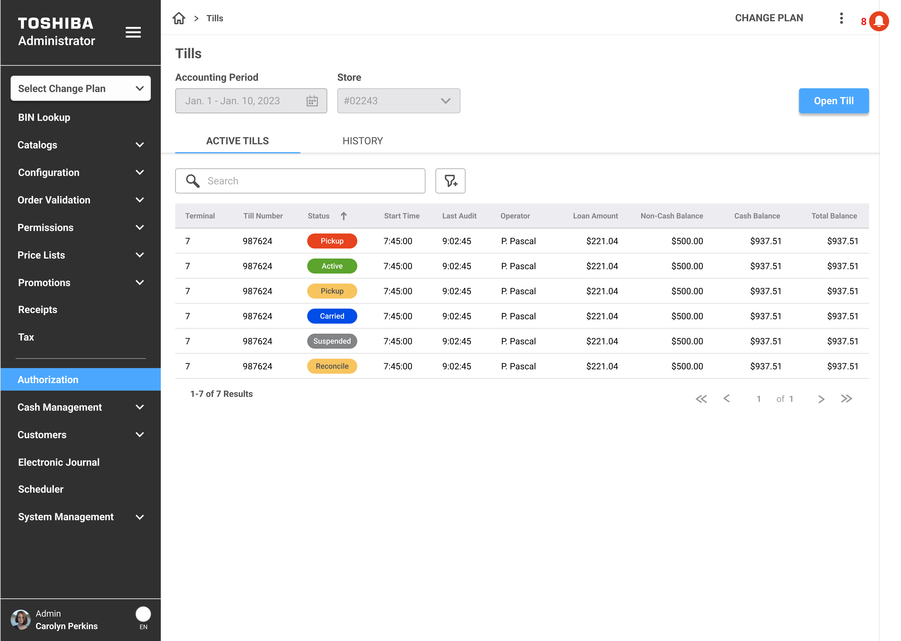
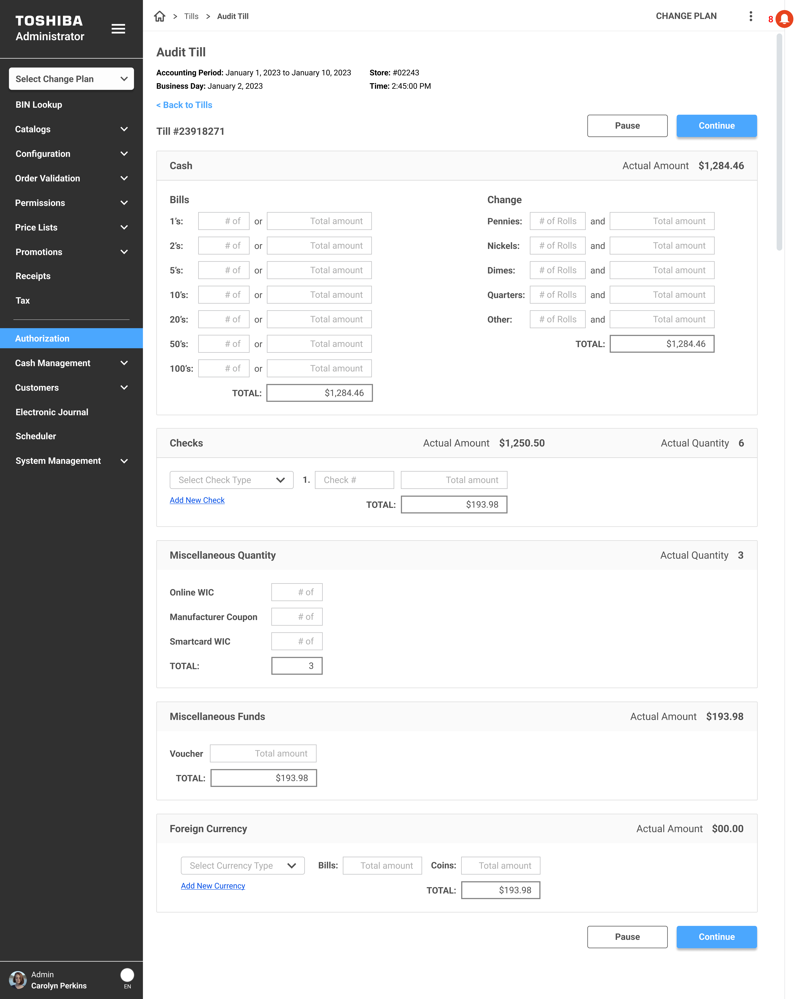
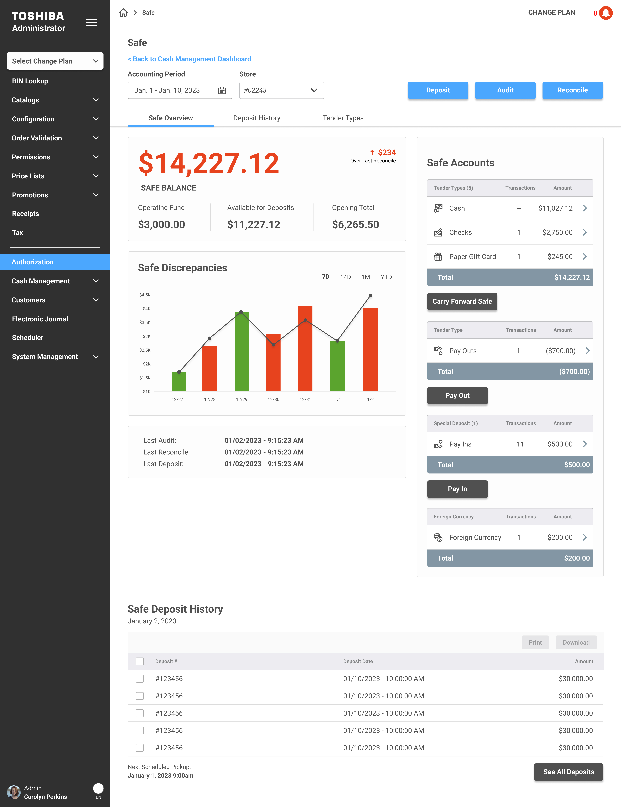
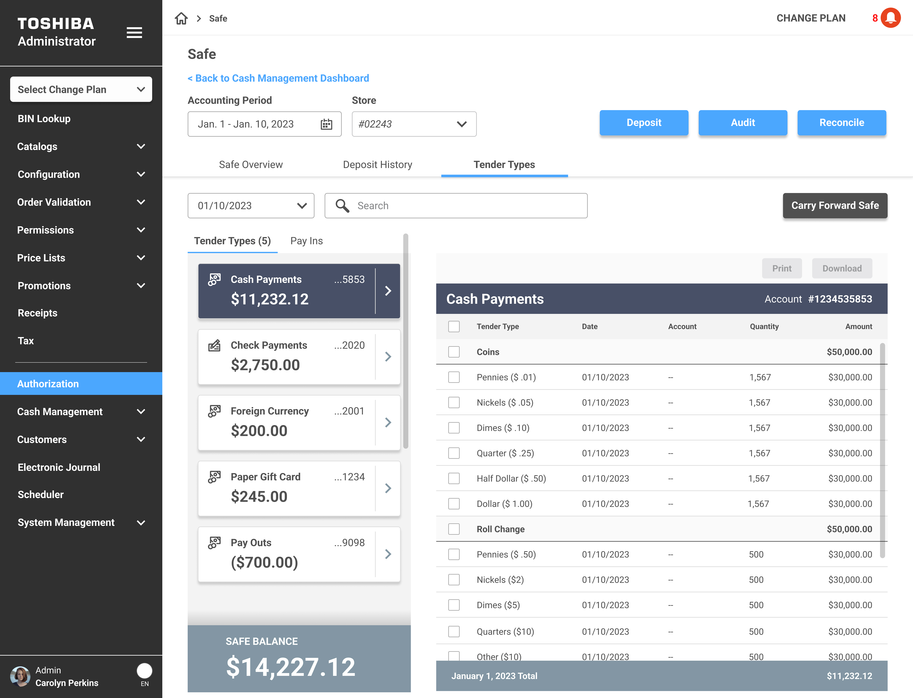

Cash Management

Cash Management is one of the company's administration products that lives inside the broader Admin platform. It's the tool store managers and back-office staff use to keep track of everything cash-related: tills, safe balances, audits, deposits, reconciliation. Basically, all the money moving through a retail store on any given day.
The problem was that this workflow was scattered. Managers were jumping between screens to check till statuses, manually tracking safe balances, and running audits through a process that took way more steps than it needed to. I was brought on to design a centralized experience that pulled all of this into one place and made the day-to-day operations faster and less error-prone.

Retail cash operations are one of those things that sound simple until you actually look at what's involved. A single store might have 15 tills running across multiple terminals, a safe that needs to be audited and reconciled daily, deposits that need to be tracked, and loan amounts that need to be monitored. And the people managing all of this are doing it while also running the store.
Here's what we were dealing with:
I approached this the same way I approach most enterprise tools: figure out what the user needs to see first, what they need to do most often, and make those two things as easy as possible.
The dashboard became the centerpiece. I designed it to give managers a complete picture of their store's cash health in one glance:
When managers need more detail, the Tills page gives them the full picture. It's a data table with every till across the store: terminal number, status, start time, last audit, operator, loan amount, and balances. Tabs let you switch between Active Tills and History so you can see what's happening now or look back at closed tills from previous shifts.
The "Open Till" action sits in the top right. Search and filter are right there. Nothing is buried. The whole thing was built using components from the AUI Design System, so it's consistent with every other table in the Admin platform.

The audit flow was probably the biggest improvement. Previously, counting a till involved navigating through multiple screens and manually entering totals without much structure. I redesigned it as a single-page guided form that walks the user through every category of cash in the till:
The whole thing has a Pause button so the user can step away without losing their count, and a Continue button to submit. No more starting over because you had to help a customer mid-audit.
The Safe page is where managers go to understand the full picture of what's in the safe and what needs to happen with it. I designed it with three tabs: Safe Overview, Deposit History, and Tender Types.
The Overview tab leads with the safe balance front and center, broken down into Operating Fund, Available for Deposits, and Opening Total. Below that, a Safe Discrepancies chart shows variances over time so managers can spot patterns. The right side surfaces Safe Accounts, breaking down totals by tender type: cash, checks, paper gift cards, and more. Carry Forward Safe and Pay Out actions are accessible right from this view.
Last Audit, Last Reconcile, and Last Deposit timestamps sit at the bottom so there's never a question of when things were last touched.

The Tender Types tab gives managers a detailed breakdown of every type of payment sitting in the safe. Cash Payments, Check Payments, Foreign Currency, Paper Gift Cards, Pay Outs. Each one shows the total amount and transaction count, and you can expand any category to see line-by-line detail down to individual denominations.
This was important because managers were constantly asked questions like "how much cash do we actually have in the safe right now?" and the answer used to require pulling reports from multiple places. Now it's one click. The detail view shows every denomination, date, account number, quantity, and amount. You can print or download the data directly from the page.

Cash Management shipped as part of the Administration platform and is actively used by major retail customers. Here's what changed: